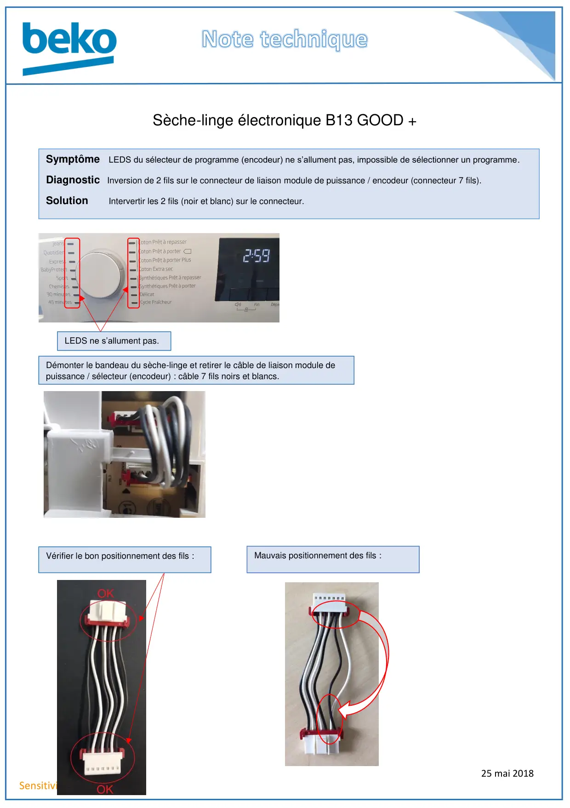
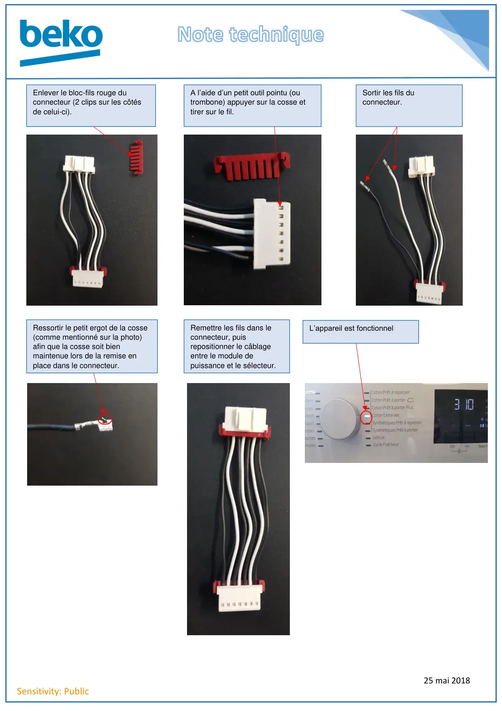

Inversion fil sur connecteur

25 mai 2018Sensitivity: PublicSèche-linge électronique B13 GOOD +Symptôme LEDS du sélecteur de programme (encodeur) ne s’allument pas, impossible de sélectionner un programme.Diagnostic Inversion de 2 fils sur le connecteur de liaison module de puissance / encodeur (connecteur 7 fils).Solution Intervertir les 2 fils (noir et blanc) sur le connecteur.LEDS ne s’allument pas.Démonter le bandeau du sèche-linge et retirer le câble de liaison module depuissance / sélecteur (encodeur) : câble 7 fils noirs et blancs.Vérifier le bon positionnement des fils :Mauvais positionnement des fils :
1 / 2
25 mai 2018Sensitivity: PublicEnlever le bloc-fils rouge duconnecteur (2 clips sur les côtésde celui-ci).A l’aide d’un petit outil pointu (outrombone) appuyer sur la cosse ettirer sur le fil.Sortir les fils duconnecteur.Ressortir le petit ergot de la cosse(comme mentionné sur la photo)afin que la cosse soit bienmaintenue lors de la remise enplace dans le connecteur.Remettre les fils dans leconnecteur, puisrepositionner le câblageentre le module depuissance et le sélecteur.L’appareil est fonctionnel
2 / 2